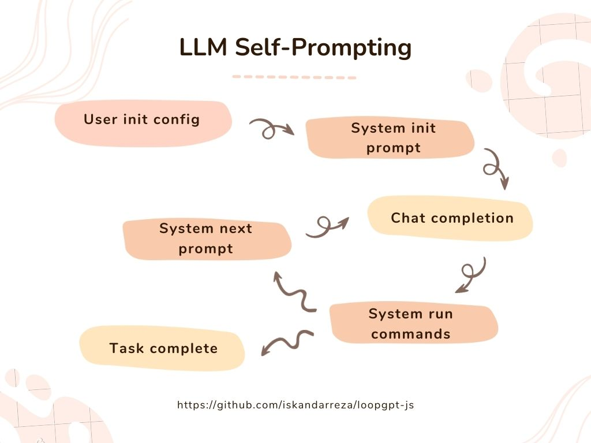

LoopGPT-JS
A lightweight Javascript implementation of the loopgpt Python module by Fariz Rahman.
For use in browser environments, particularly off the main thread within web worker processes.
How it works
Here's a basic rundown of how autonomous self-prompting AI agents like LoopGPT or AutoGPT work:

- User sets the initial config, which describes the agent and it's goals
- System generates an initial prompt to send to the chat completion API
- Chat completion API provides a response in a preset format that the system can process. Response may include the next command the agent decides to take
- System processes the response, runs any commands the agent includes in the last response, then generates the next prompt to send to the chat completion API
- Cycle repeats until exit conditions are met
View the docs
Add to your node project:
npm install loopgpt-js
Usage example:
const loopgpt = require('loopgpt-js')
const { Agent } = loopgpt
async function initLoop() {
// you could save the api key(s) on a server and fetch it when needed
const apiKeyResponse = await fetch('/api/openai', {
method: 'POST'
})
const { apiKey } = await apiKeyResponse.json()
// or you could pass it in directly
const keys = {
openai: apiKey,
google: {
googleApiKey: 'GOOGLE_API_KEY',
googleCxId: 'CUSTOM_SEARCH_ENGINE_ID'
}
}
// Create a new instance of the Agent class
const agent = new Agent({
keys: keys,
goals: [
'Run the web_search command for "California wildflowers" and then produce an overview of your findings with descriptions of each flower and their native area,'
]
})
const chat = async () => {
let response
response = await agent.chat({ message: null })
while (response?.command?.name !== 'task_complete') {
response = await agent.chat({ run_tool: true })
console.log(agent)
console.log(response)
}
}
chat()
}
initLoop()
See Also:
https://github.com/iskandarreza/ai-worker-js -- Implementation of loopgpt-js as a dynamically created web worker in a Next/React app